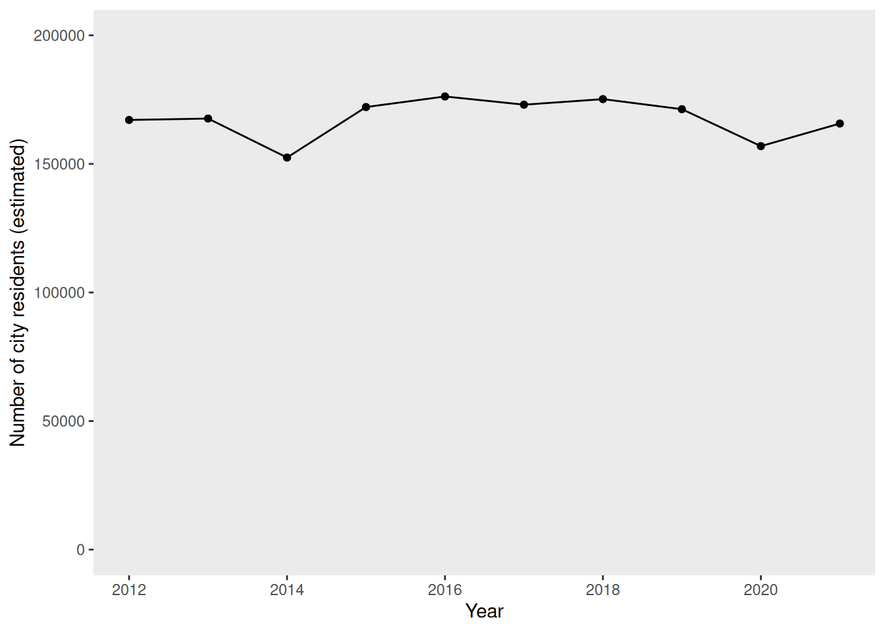
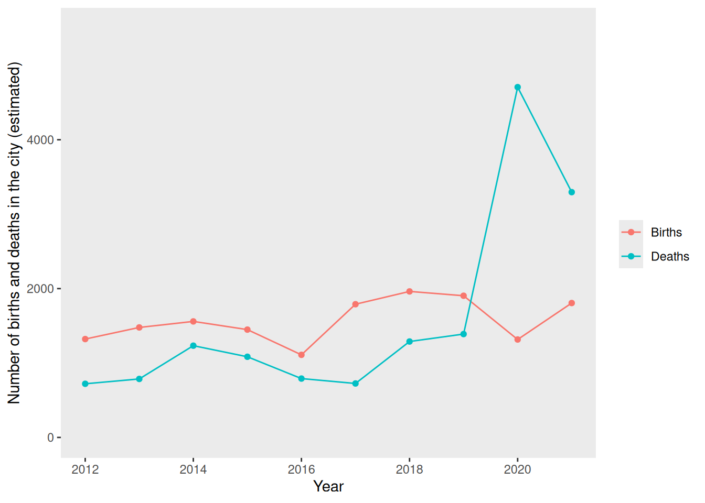
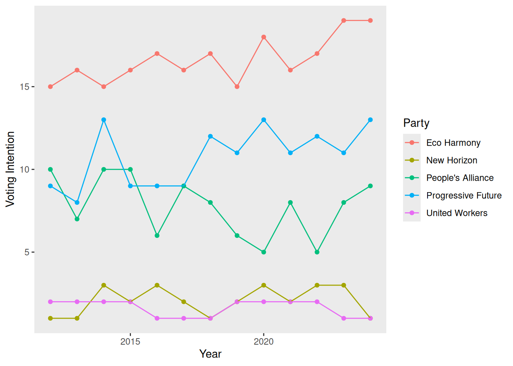
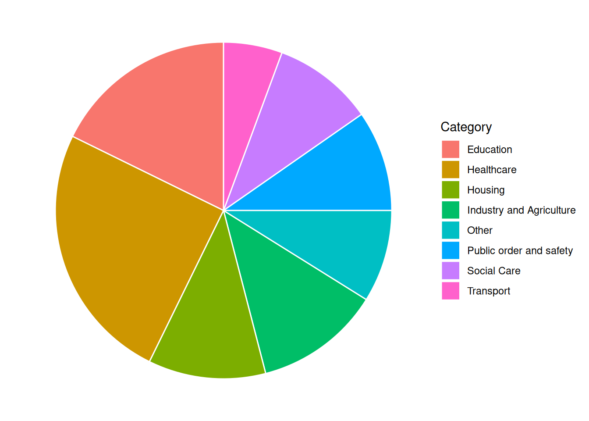

Hospital Data
Inverkeld Sentinel
Breaking News
Fears Over Possible Outbreak of Legionellosis in Inverkeld
24 February, 2025
Anxiety surges in Inverkeld as health officials investigate a potential outbreak of Legionellosis, raising alarm bells across the region. Though yet to be formally confirmed as a pandemic, suspicions have intensified following a recent concerning surge in patients presenting with symptoms indicative of Legionellosis.
Legionellosis is caused by Legionella pneumophila. It is typically transmitted through the inhalation of contaminated water droplets, such as those from air conditioning systems or hot tubs. Symptoms include fever, chills, cough, muscle aches, and headaches. Residents of Inverkeld experiencing any of these symptoms are advised to contact their GP or dial 111 for health advice.
In a press release, the director of the Queen Rose in Inverkeld noted a distressing uptick in individuals reporting symptoms consistent with those associated with Legionellosis. Anxieties were first raised when the local GPs began reporting an unusual increase in patients with symptoms of Legionellosis. While investigations are still ongoing, the possibility of a pandemic outbreak shadows the community, prompting concern from health agencies.
In response to the escalating concerns, health officials have activated several preventive actions, and Inverkeld have convened an Emergency Pandemic Response Team, which will be meeting on 2025-02-28 and attempting to find solutions that will stop the spread of the pandemic in Inverkeld.
The First Minister assured residents that authorities are leaving exploring every avenue in their efforts to safeguard public health, and furthermore urged residents to remain vigilant and cooperate with health directives from the Inverkeld City Council. A statement released by the First Minister’s office read: “While there is no confirmation of an outbreak at this time, we are taking this situation very seriously.”
The people in Inverkeld have already begun to consider the possibility of a pandemic; potential consequences such as school closures, economic repercussions, and strain on healthcare resources, have sparked apprehension among residents, underscoring the need for swift and decisive action.
Contact Information for Further Updates:
More information will be posted on the Inverkeld website as the situation develops: https://www.InverkeldCouncil.co.uk
The Inverkeld Emergency Pandemic Response Team can be contacted on +44 01786 3091 7139 or at pandemic_response@Inverkeld.co.uk
About the Author:
Gerardo Sanabria is a health correspondent at the Inverkeld Sentinel, specializing in public health and safety issues.He can be contacted at gs8322@InverkeldSentinel.com.
Inverkeld was granted city status in 1956. Located near Castle Kincardine, Inverkeld is noted for its rich maritime history. Major industries in the city include pharmaceuticals, retail, and agriculture.
Inverkeld is well-served by public transport: there are 3 bus companies operating routes that cover the city and outlying areas, and road links to other major cities (the A75 to Falkirk and the the A30 to Dumfries.) Inverkeld is further connected to regional towns and villages by rail services from the Inverkeld railway station. Inverkeld is also served by Inverkeld Airport, which is 8 miles from the city centre and which offers daily flights to Florence, Nice, and Düsseldorf.
Notable buildings in the city include Inverkeld Castle, Inverkeld Cathedral, and Braeside Institute. Inverkeld also has a number of historic landmarks and several historic monuments. The Inverkeld jazz festival is held annually in May, and tourists also flock to Inverkeld to sample the local cuisine in autumn. Inverkeld is also noted as a hub of local arts and culture, with Stewart Hall and The Globe and Gale drawing in crowds for performances from local and international artists. The city is renowned for sports, with the Bluebirds and Hornets teams representing the city for field hockey and cricket, respectively.
Some of the key Inverkeld features are summarized in the list below.
Public Facilities/Community Amenities
- Schools:
- 5 primary schools
- 6 secondary schools
- 1 college
- Nurseries: 8
- Care Homes: 4
- Restaurants and Cafes: 103
- Parks and Playgrounds: 5
- Libraries: 4
- Gyms and Sports Facilities: 9
- Prisons: 2
- Police and Fire Stations: 6
- Surgeries and pharmacies: 13
- Hospital: the Queen Rose
Refer to the “Data” tab for information about the city demographics, voting and polling data, and more information about the hospital.
Fact Sheet and General Information
Clinical Microbiology and Diagnosis Resources
UK Standards for Microbiology Investigations (UK SMI): Identification of Legionella species
Clinical features of Legionnaire’s Disease and Pontiac Fever
Public Health and Epidemiology Resources
Public Communications Resources
Emails
Your committee has recently received a great deal of correspondence regarding the pandemic in Inverkeld. A representative sample of these e-mails is shown below.
News/Blog Posts
Your committee has also been monitoring news and published blog posts about the pandemic in Inverkeld, in order to better gauge public opinion. A representative sample of these is shown below.
City Demographics, Polling, and Budget
The current population of Inverkeld (as of December 2022) is 155373. The demographic data for the city is shown below.
Pop <- c(sample(150000:170000, size=3, replace=TRUE), sample(170000:180000, size=3, replace=TRUE), sample(190000:170000, size=2, replace=TRUE), sample(150000:170000, size=2, replace=TRUE))
PopYears <- c(2012:2021)
population <- data.frame(Pop, PopYears)
ggplot(data = population, aes(x=PopYears, y=Pop)) +
geom_point() +
geom_line() +
labs(y = "Number of Inverkeld residents (estimated)", x = "Year") +
scale_y_continuous(limits=c(0, 200000)) +
theme(panel.grid.major = element_blank(), panel.grid.minor = element_blank())
Demog <- c((rep("Births", 10)), (rep("Deaths", 10)))
Num <- c(sample(1000:2000, size=10, replace=TRUE), sample(500:1500, size=8, replace=TRUE), sample(3000:5500, size=2, replace=TRUE))
DemogYears <- c(rep(2012:2021, 2))
birthdeath <- data.frame(Demog, Num, DemogYears)
ggplot(data = birthdeath, aes(x=DemogYears, y=Num, group=Demog, colour=Demog)) +
geom_point() +
geom_line() +
labs(y = "Number of births and deaths in Inverkeld (estimated)", x = "Year", colour = "Demographics") +
scale_y_continuous(limits=c(0, 5500)) +
theme(panel.grid.major = element_blank(), panel.grid.minor = element_blank()) +
scale_color_discrete(name="")
The current provost of Inverkeld was elected in 2018, as a member of a popular political party who made a number of election promises regarding a “Green New Deal” for Inverkeld.

There are currently 151 elected councillors, representing the political parties in Inverkeld as follows:
| Political Party | Number of Seats |
|---|---|
| Liberty League | 4 |
| Community First | 18 |
| Eco Harmony | 26 |
| Renewal Movement | 14 |
| Progressive Future | 3 |
The overall budget (expenditures) for the 2023-2024 financial year was £537904068. A summary of expenditures by category for this financial year is shown below.

Hospital and Hospital Budget
The annual operating budget for financial year 2022-2023 was £3.8 million, and average expenditures are shown by category in the figure below.

- You can find more key information about the main hospital in Inverkeld, the Queen Rose in the dashboard below.
Info
The Queen Rose, built in 2010, is the main hospital in Inverkeld.
The Queen Rose has units specialising in radiology, nephrology, gastroenterology, coronary care and an orthopaedics department.
Capacity
list(
icon = "hospital",
color = "dark",
value = beds
)$icon
[1] "hospital"
$color
[1] "dark"
$value
[1] 163list(
icon = "thermometer-half",
color = "secondary",
value = icu
)$icon
[1] "thermometer-half"
$color
[1] "secondary"
$value
[1] 19list(
icon = "vignette",
color = "light",
value = isolation
)$icon
[1] "vignette"
$color
[1] "light"
$value
[1] 6list(
icon = "hospital",
color = "dark",
value = bedocc
)$icon
[1] "hospital"
$color
[1] "dark"
$value
[1] 92list(
icon = "thermometer-half",
color = "secondary",
value = icuocc
)$icon
[1] "thermometer-half"
$color
[1] "secondary"
$value
[1] 90list(
icon = "vignette",
color = "light",
value = isocc
)$icon
[1] "vignette"
$color
[1] "light"
$value
[1] 97list(
icon = "person-fill",
color = "success",
value = round(beds * (sample(c(0.6, 0.7, 0.8), 1)), digits = 0)
)$icon
[1] "person-fill"
$color
[1] "success"
$value
[1] 98list(
icon = "people-fill",
color = "warning",
value = round(beds/7, digits = 0)
)$icon
[1] "people-fill"
$color
[1] "warning"
$value
[1] 23list(
icon = "vignette",
color = "info",
value = sample(1000:2000, 1)
)$icon
[1] "vignette"
$color
[1] "info"
$value
[1] 1793Key Performance Indicators
As part of the Queen Rose’s ongoing commitment to excellence, the hospital diligently monitors key performance indicators and strives to meet established targets. While progress has been made, we acknowledge that certain goals remain unmet. We are actively working to address these challenges and enhance patient care.
Key Performance Targets:
Waiting time for an ambulance (category 2 event) should be no more than 18 minutes
95% or more of all patients waiting in A&E should be seen in less than 4 hours
85% of all patients waiting for cancer treatment should be seen within 62 days
list(
color = ifelse(beds<150, "primary", "secondary"),
value = aeadmiss
)$color
[1] "secondary"
$value
[1] 8820list(
icon = "hourglass",
color = ifelse(aewait>95, "success", "danger"),
value = aewait
)$icon
[1] "hourglass"
$color
[1] "danger"
$value
[1] 73list(
icon = "clock",
color = ifelse(ambwait<18, "success", "danger"),
value = ambwait
)$icon
[1] "clock"
$color
[1] "danger"
$value
[1] 70list(
icon = "calendar3",
color = ifelse(refwait>84, "success", "danger"),
value = refwait
)$icon
[1] "calendar3"
$color
[1] "danger"
$value
[1] 78list(
icon = "calendar3-event",
color = ifelse(cancwait>84, "success", "danger"),
value = cancwait
)$icon
[1] "calendar3-event"
$color
[1] "danger"
$value
[1] 82list(
icon = "calendar3-week",
color = "info",
value = elecwait
)$icon
[1] "calendar3-week"
$color
[1] "info"
$value
[1] 8036Infection Control
The Queen Rose hospital strives to meet stringent targets for infection control and antibiotic stewardship to ensure patient safety and combat antimicrobial resistance. Infection control protocols are critical in maintaining high standards of hygiene and patient care. Similarly, antibiotic stewardship programs are essential for optimizing the use of antimicrobials, thereby reducing the risk of resistance and ensuring effective treatments for future generations.
There was 1 fewer hospital-acquired MRSA infection in 2025 than there were in 2024.
There were 4 more hospital-acquired Clostridiodes difficile infections in 2025 than there were in 2024.
There were 5 fewer hospital-acquired Candida auris infections in 2025 than there were in 2024.
list(
icon = ifelse(mrsa2<mrsa1, "arrow-down-right", "arrow-up-right"),
color = ifelse(mrsa2<mrsa1, "success", "danger"),
value = mrsa2
)$icon
[1] "arrow-down-right"
$color
[1] "success"
$value
[1] 6list(
icon = ifelse(Cdiff2<Cdiff1, "arrow-down-right", "arrow-up-right"),
color = ifelse(Cdiff2<Cdiff1, "success", "danger"),
value = Cdiff2
)$icon
[1] "arrow-up-right"
$color
[1] "danger"
$value
[1] 8list(
icon = ifelse(Cauris2<Cauris1, "arrow-down-right", "arrow-up-right"),
color = ifelse(Cauris2<Cauris1, "success", "danger"),
value = Cauris2
)$icon
[1] "arrow-down-right"
$color
[1] "success"
$value
[1] 5list(
icon = "prescription",
color = ifelse(app_therapy > 95, "success", "warning"),
value = app_therapy
)$icon
[1] "prescription"
$color
[1] "warning"
$value
[1] 82list(
icon = "capsule-pill",
color = ifelse(desc > 15, "success", "warning"),
value = desc
)$icon
[1] "capsule-pill"
$color
[1] "warning"
$value
[1] 13list(
icon = "exclamation-diamond",
color = ifelse(amr_rate > 50, "success", "warning"),
value = amr_rate
)$icon
[1] "exclamation-diamond"
$color
[1] "warning"
$value
[1] 47Community Health Data
The Queen Rose monitors the prevalence of COVID-19 and other viruses in the community to ensure they are prepared for potential surges in patient admissions, enabling them to allocate resources and staff efficiently. By tracking these trends, the hospital can implement timely public health interventions and provide accurate information to the community to mitigate the spread of infections. Additionally, continuous monitoring helps in identifying emerging outbreaks early, allowing for a rapid response that minimizes the impact on public health and healthcare services.
There were 18 fewer COVID-19 cases this week than in the previous week.
We are seeing an increase in infections caused by other respiratory viruses (e.g., influenza, adenovirus, rhinovirus, RSV).
list(
icon = "virus",
color = ifelse(covid2<covid1, "success", "danger"),
value = covid1
)$icon
[1] "virus"
$color
[1] "danger"
$value
[1] 91list(
icon = "virus2",
color = ifelse(virus2<virus1, "success", "danger"),
value = virus1
)$icon
[1] "virus2"
$color
[1] "danger"
$value
[1] 78list(
icon = "clipboard2-pulse",
color = "success",
value = covid_vacc
)$icon
[1] "clipboard2-pulse"
$color
[1] "success"
$value
[1] 75list(
icon = "clipboard2-pulse",
color = "warning",
value = vacc_rate
)$icon
[1] "clipboard2-pulse"
$color
[1] "warning"
$value
[1] 93Epidemiological Data
City Pandemic Planning Resources
COVID-19 health protection guidance released by Public Health Scotland
Tackling antimicrobial resistance 2019–2024: The UK’s five-year national action plan
UK One Health Report - Joint report on antibiotic use and antibiotic resistance, 2013–2017
Scottish One Health Antimicrobial Use and Antimicrobial Resistance in 2021
Hospital Pandemic Preparedness and Planning
As a hospital director, you are familiar with the literature surrounding hospital pandemic preparedness, and regularly read papers such as:
Mer, Mervyn et al. “Critical Care Pandemic Preparation: Considerations and Lessons Learned from COVID-19.” Critical care clinics vol. 38,4 (2022): 761-774.
Tacconelli, Evelina et al. “Challenges of data sharing in European Covid-19 projects: A learning opportunity for advancing pandemic preparedness and response.” The Lancet regional health. Europe vol. 21 (2022): 100467.
Adelaja, I., Sayma, M., Walton, H., McLachlan, G., de Boisanger, J., Bartlett-Pestell, S., Roche, E., Gandhi, V., Wilson, G. J., Brookes, Z., Yeen Fung, C., Macfarlane, H., Navaratnam, A., James, C., Scolding, P., & Sara, H. (2020). A comprehensive hospital agile preparedness (CHAPs) tool for pandemic preparedness, based on the COVID-19 experience. Future healthcare journal, 7(2), 165–168.
Communications Resources
Matta, G. Science communication as a preventative tool in the COVID19 pandemic. Humanit Soc Sci Commun 7, 159 (2020).
Abdool Karim, Salim S. “Public understanding of science: Communicating in the midst of a pandemic.” Public understanding of science (Bristol, England) vol. 31,3 (2022): 282-287.
Royan, Regina et al. “Use of Twitter Amplifiers by Medical Professionals to Combat Misinformation During the COVID-19 Pandemic.” Journal of medical Internet research vol. 24,7 e38324. 22 Jul. 2022, doi:10.2196/38324
Tait, Margaret E et al. “Serving the public? A content analysis of COVID-19 public service announcements airing from March - December of 2020 in the U.S.” Preventive medicine reports vol. 29 (2022): 101971.
Epidemic Calculator
You may choose to include mathematical modeling as part of your decision making (for example, using an epidemic calculator or other models); if you do so, you should provide details of your modelling and predictions when you submit your group’s pro forma.
Tip
The following list of references is provided as a starting place for you to begin exploring various aspects of Legionella pneumophila biology, diagnostics, epidemiology, and treatment. However, this is by no means an exhaustive list: you should further explore the relevant peer-reviewed literature independently.